Prima & Ultima nghĩa là “Đầu tiên & Cuối cùng” trong tiếng Latin. Cái tên nói lên tất cả.
Với
chỉ 376 bộ sản phẩm, đây chính là bộ sưu tập whisky cao cấp và giới hạn được mong chờ nhất
trong
năm. Mang đến những chai whisky thuộc về lần đóng chai đầu tiên hoặc cuối cùng của từng
dòng,
Prima & Ultima kể lại những câu chuyện, gợi lại những cột mốc quan trọng trong lịch sử chưng
cất
whisky thế giới. Theo truyền thống, mỗi đợt phát hành của Prima & Ultima đều được kiểm duyệt
bởi
một trong những nhà pha chế bậc thầy nổi tiếng nhất ở Diageo. Sau đợt phát hành đầu tiên vào
tháng 6 năm 2020 do Bậc thầy Jim Beveridge kiểm duyệt, đợt phát hành thứ hai được ra mắt năm
2021 do Bậc thầy Maureen Robinson tiếp nối.
Chia sẻ về lần phát hành này, bà Maureen cho biết: “Các chất vị mạch nha đơn trong bộ sưu
tập
lần này rất đặc biệt – một số loại chưa từng được hé lộ trước đây, một số khác chỉ còn lại
những
chai cuối cùng. Tôi nhớ đến quyết định giữ lại các thùng đầy ở Auchroisk vì biết rằng nó sẽ
có
vai trò đặc biệt cho tương lai, cũng như việc mình đã mong đợi và phấn khích ra sao trong
những
lần thử sau khi ủ mà chúng tôi đã thực hiện với Linkwood và The Singleton, giờ đây đã được
hiện
thực hóa trong đợt phát hành này.” Đi kèm cùng trọn bộ 8 chai mạch nha đơn cổ điển của bộ
sưu
tập năm nay là 8 ly thủy tinh, là thành quả hợp tác của 2 nghệ nhân chế tác với thiết kế
riêng
biệt như đang kể lại câu chuyện của từng chất vị whisky nguyên bản.
Special Releases 2021 – Legends Untold là bộ sưu tập 8 loại single malt Scotch
whisky nguyên bản, hiếm có và giới hạn được tuyển chọn thủ công, nơi mỗi chai đều
thể hiện một đặc điểm riêng, được lấy cảm hứng từ những sinh vật thần thoại sống và
bảo vệ những vùng đất xung quanh mỗi nhà máy chưng cất. Từ điểm sâu nhất của đại
dương cho đến khu vực cao nhất trên mặt đất, mọi ngóc ngách cửa xứ sở Scotland như
được nắm bắt và tái hiện một cách sống động thông qua từng loại whisky do chính tay
bậc thầy pha chế Craig Wilson tự tay chọn lựa. Tám dòng single malt whisky được đóng
chai trực tiếp từ thùng ủ gồm Oban, Talisker, Lagavulin, The Singleton of Dufftown,
Mortlach, Cardhu, và lần đầu tiên sau hơn một thập kỷ Royal Lochnagar được ra mắt
với giới mộ điệu. Đặc biệt hơn hết, đối với bộ sưu tập năm nay, chúng tôi mang đến
trải nghiệm độc đáo thông qua công nghệ AR cùng với mã QR được hiện diện trên bao bì
sản phẩm, dẫn dắt người dùng vào thế giới huyền bí của từng vùng đất với những câu
chuyện li kì và hấp dẫn.
NĂM CHƯNG CẤT: 2007
ĐỘ CỒN: 55.9% ABV
VÙNG: Speyside
XUẤT XỨ: Dufftown
THÙNG: gỗ sồi Virgin và gỗ sồi Mỹ refill
NĂM CHƯNG CẤT: 2012
ĐỘ CỒN: 59.7% ABV
VÙNG: Isle of Skye
XUẤT XỨ: Carbost
THÙNG: refill đậm vị than bùn
Tập hợp 8 hương vị đại diện cho 8 nhà chưng cất trứ danh Scotland, Special Releases 2020
là
chuyến hành trình thiên nhiên kỳ bí và đầy cuốn hút cho mọi tín đồ whisky. Mỗi dòng
whisky
sẽ đưa quý khách đến từng khu nhà máy vang danh một thời, để lại dấu ấn khó phai nhờ
hương
vị đặc trưng. Được chế tác từ những thùng ủ đặc biệt, trải qua các bước hoàn thiện hiếm
có
và đa dạng số tuổi đời, bộ sưu tập sống động và đậm tính thiên nhiên đúng với câu chuyện
mà
nó mang trên mình – Rare by Nature.
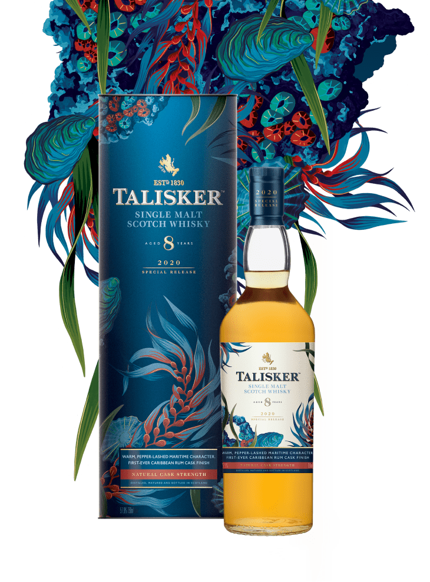
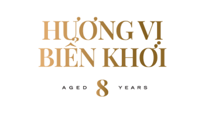
Talisker 8 Y.O là loại whisky mạch nha đầu tiên được ủ trong
thùng rượu Rum của vùng Caribbean, mang đến kết cấu mượt mà,
hương vị vô cùng phong phú nhưng không kém phần cổ điển.
Talisker 8 Y.O mang đến cuộc phiêu lưu vị giác ấn tượng như khởi
đầu cuộc hải trình, tràn ngập hương vị biển như muối, tảo biển,
cát ấm cùng nền thịt nướng nghi ngút khói. Kết cấu mượt mà,
hương vị phong phú, mang đến dư âm khói cay và khô.
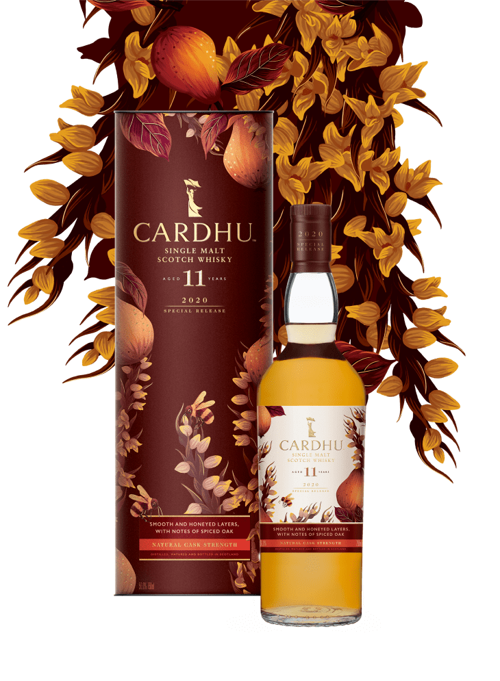
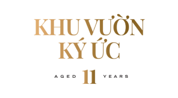
Được mệnh danh là “Nữ hoàng mạch nha đơn của vùng Speyside”,
Cardhu 11 Y.O được ủ trong thùng gỗ sồi Mỹ Bourbon cũ theo từng
mẻ nhỏ, tạo ra tông màu ngọt ngào của hoa, vị cay nồng và khô.
Thanh lịch và hoàn hảo, Cardhu 11 Y.O mang hương thơm của một
vườn cây kết hợp: lê, táo xanh, nho và dứa cùng vị vỏ chanh
thanh mát xen lẫn lớp rêu nhẹ nhàng. Theo cùng là vị bơ béo ngậy
và kết thúc với vị nồng ấm kéo dài.
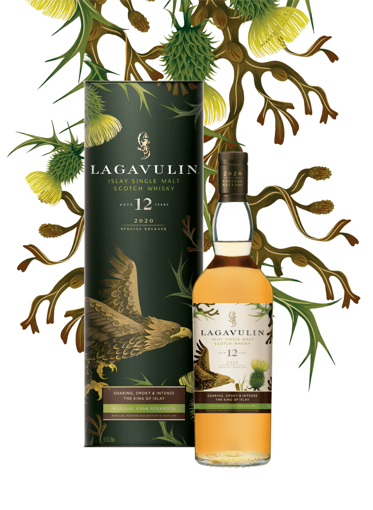
Quá trình chưng cất nghiêm ngặt trong thùng gỗ sồi Mỹ và nguồn
nước tinh khiết, đậm mùi khói than bùn đã tạo ra một Lagavulin
12 Y.O tròn vị, kích thích mọi giác quan. Bất ngờ đến ngay từ
lần nhấp môi đầu tiên với hương khói mạnh và gắt. Mùi khói theo
sau đó phảng phất và len lỏi, gợi nhắc về lửa than bùn mới tắt.
Hậu vị nồng ấm trong vòm miệng, ngọt ngào với tảo biển, cùng dư
vị khô và thăng hoa của khói gỗ.
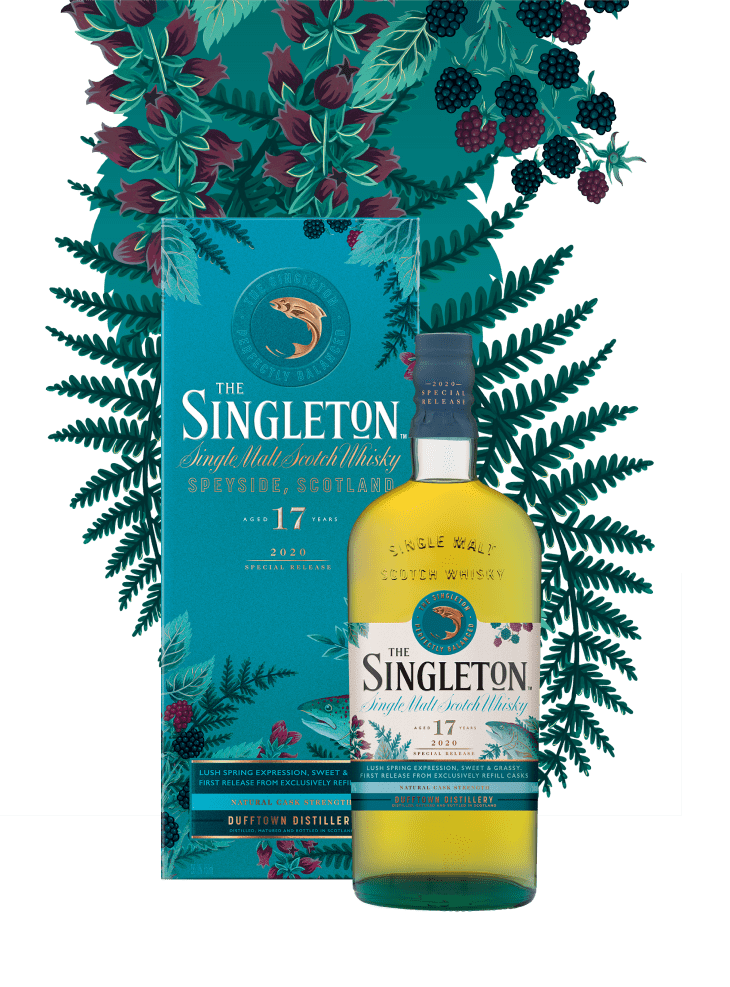
Nhà chưng cất vốn nổi tiếng với gu sản xuất whisky có hương vị
cân bằng và êm mượt, được ví như sức sống đầy mạnh mẽ của những
chú cá hồi bơi ngược dòng nước vùng cao nguyên xứ sở Scotland.
The Singleton 17 Y.O là cuộc dạo chơi giữa khu vườn đầy hoa thơm
mát, với hương trái cây sống động pha vị ngọt ngào của tổ ong,
để rồi kết thúc tại hậu vị một cách trầm ấm xen lẫn vị cay nhè
nhẹ. Một sự cân bằng đến hoàn hảo!
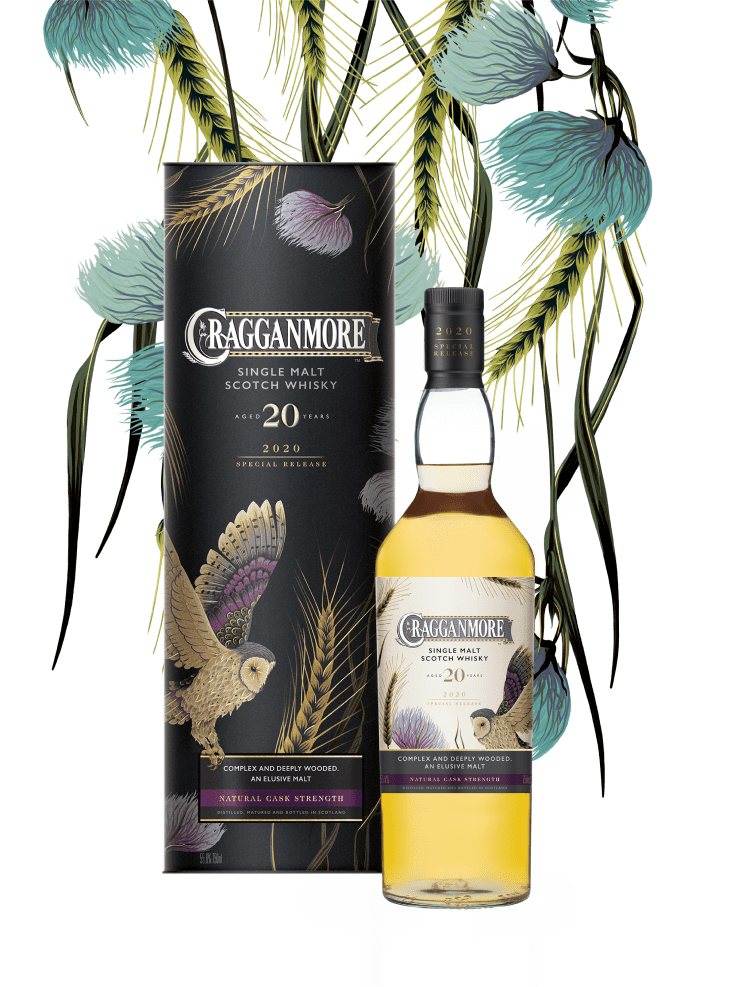
Cragganmore 20 Y.O là dòng whisky lâu đời nhất từng được nhà
chưng cất Cragganmore ra mắt. Mang tầng vị phức tạp khó có thể
tìm thấy trong bất kỳ loại mạch nha nào khác, hương vị của
Cragganmore xuất hiện và biến mất một cách bí ẩn. Whisky mang
đến vị ngọt đậm đà ở đầu lưỡi của lê chín, dưa mềm và chuối
xanh, thêm chút hương của da găng tay mềm và gỗ cứng nhám, cùng
kết cấu kem mịn và hậu vị kéo dài.
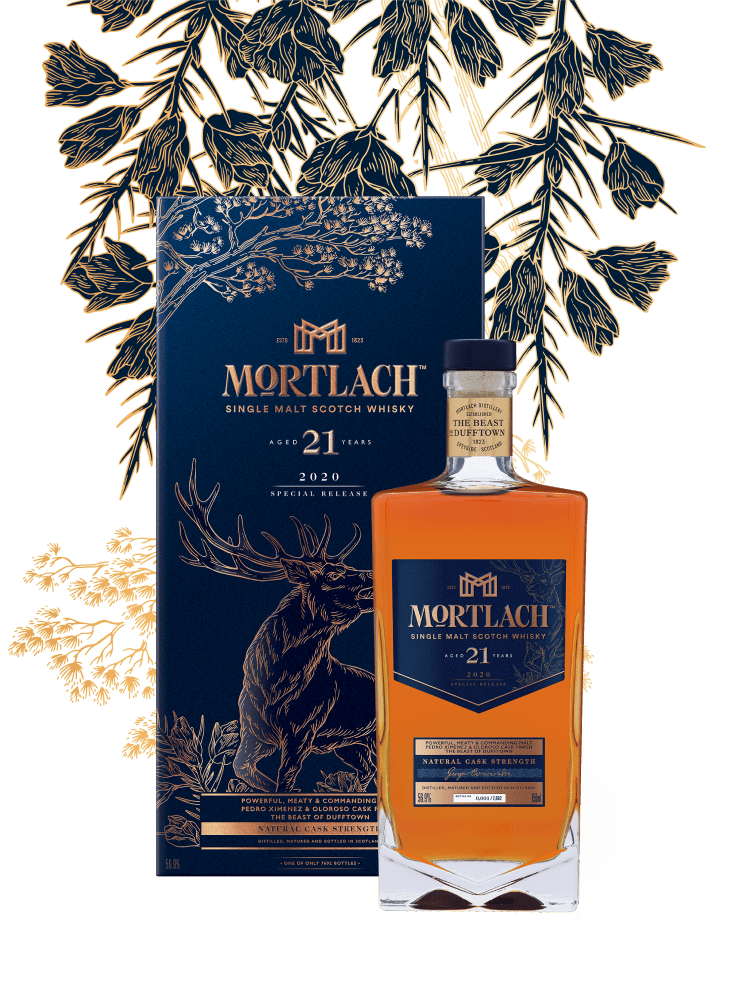
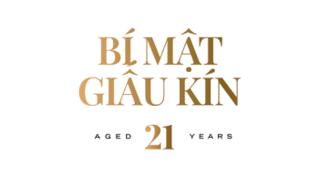
Quá trình chưng cất độc đáo 2.81 lần với 21 năm ủ trong thùng gỗ
Pedro Ximenez và Oloroso đã tạo nên một Mortlach 21 Y.O có hương
vị nổi trội. Giữ nguyên đặc tính cổ điển của Mortlach, song
whisky vẫn mang đến ấn tượng với hương thơm sâu lắng hòa quyện
cùng sô cô la đen, trái cây khô, cam tẩm gia vị, ớt cay và thịt
nướng, mang đến hậu vị kéo dài pha lẫn giữa vị ngọt thanh và cay
nồng, kết thúc kéo dài đầy huy hoàng.
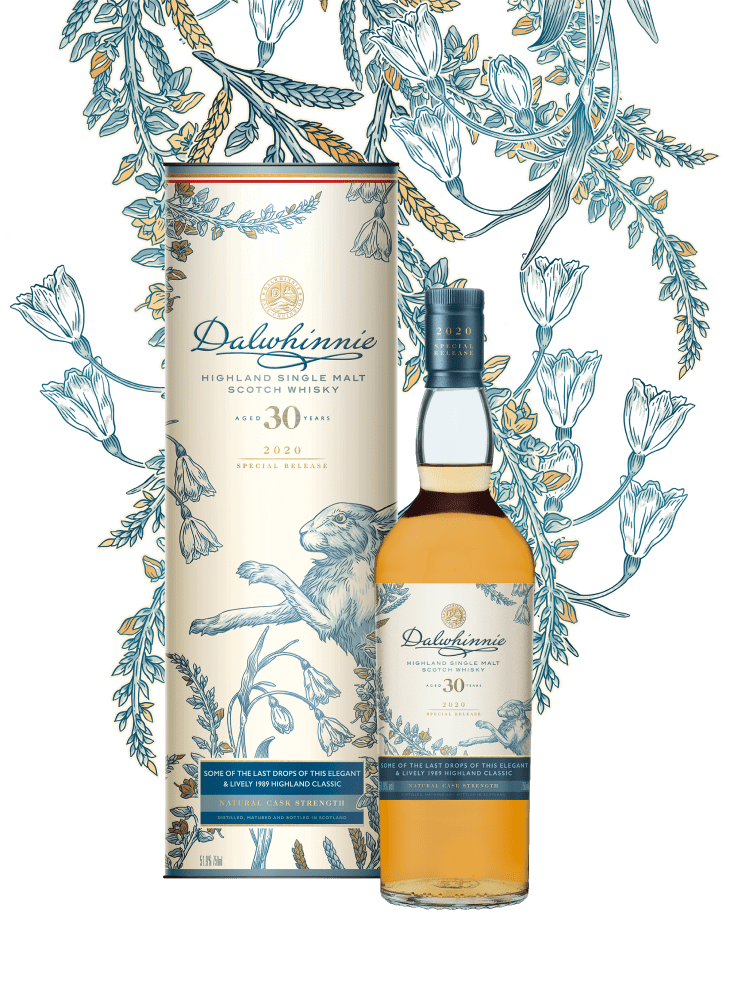
Là một trong những dòng nhiều năm tuổi nhất của bộ sưu tập,
Dalwhinnie 30 Y.O được chưng cất trên vùng núi cao với số lượng
vỏn vẹn chỉ 6.978 chai. Mùi vị đặc trưng và chất lượng hoàn hảo
của whisky đến từ hương thơm thanh thoát nhẹ nhàng của hương
đồng cỏ nội và các loại thảo mộc khô. Kéo theo sau là vị ngọt
của bánh bơ nướng cùng vị đằm của muối biển, được kết hợp hài
hòa với mùi khói lan tỏa trong vòm miệng.
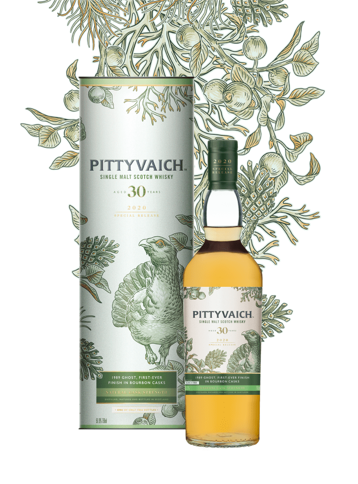
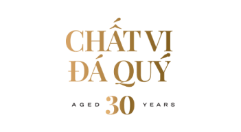
Được ủ ròng rã suốt 3 thập kỷ trong thùng Bourbon cũ, Pittyvaich
30 Y.O trải qua quá trình hoàn thiện thủ công để có thể kết tinh
được vị ngọt vani đậm đà, thoảng hương trái cây và hoa khô nhè
nhẹ, khéo léo làm bật lên hương vị của Speyside, một trong những
nhà chưng cất ma huyền thoại mà cho đến nay chỉ một số ít người
am hiểu. Pittyvaich 30 Y.O là một trong những loại whisky hiếm
nhất hiện nay, với 7.056 chai trên toàn cầu.
Hotline CSKH
+84 902 152 777